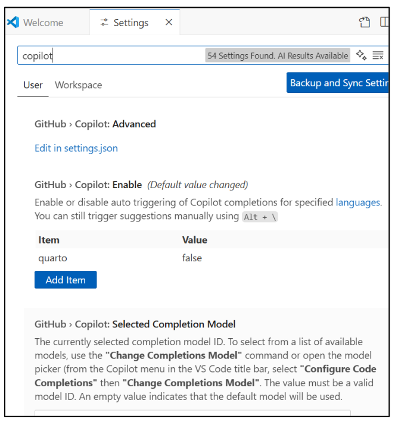

Using Git and Github
This module introduces Git and GitHub as foundational tools for version control, collaboration, and deployment in analytics and programming projects. Git is a decentralized version control system that tracks file changes and manages project history locally, while GitHub is a cloud-based platform built on Git for sharing, collaborating, and managing repositories. Together, they allow multiple contributors to work efficiently through commits, branches, merges, and pull requests. GitLab offers similar features but can be self-hosted for greater organizational control.
Students learn to set up Git and GitHub, configure user credentials, and perform essential commands (git init, git add, git commit, git push, etc.) using VS Code or GitHub Desktop. They also explore GitHub CoPilot, an AI-assisted coding tool that autocompletes and suggests code within VS Code.
The section covers best practices such as writing clear commit messages, pulling often to stay updated, using .gitignore to exclude unnecessary files, and maintaining a stable main branch. It also outlines common troubleshooting tips for merge conflicts, authentication issues, and accidental commits.
Finally, the module introduces Render.com, a platform that connects directly to GitHub for seamless web app deployment. Students link their GitHub repositories to Render to host and automatically update their Dash or analytics applications, gaining hands-on experience with real-world deployment workflows.
Understanding the prompting paradigm equips you to guide AI models effectively—skills that can be enhanced and shared by leveraging platforms like GitHub to collaborate on prompt libraries, examples, and AI-powered projects.

Purpose of Git
Git is a decentralized version control system for tracking file changes, especially in software projects with many small text files. It records who made changes and when, supports collaboration, and keeps all past versions and branches.
Works best with text files; less effective for binary files like Word docs, audio/video, or VM images. git Command
The primary way to control Git via the terminal/PowerShell.
Tasks: download projects, commit changes, switch branches, undo edits, etc.
“Git” (capitalized) = the system/concepts;
git (lowercase) = the command.
IDEs (e.g., Visual Studio) and editors (e.g., VS Code) offer built-in Git tools; web platforms like GitHub/GitLab add extra features (issue tracking, automated tests).
Git vs GitHub vs GitLab
Git: Works without central servers.
GitHub: Most popular host; acquired by Microsoft in 2018; free for public and most private projects.
A cloud-based platform for hosting and collaborating on code projects
Built on Git (a distributed version control system)
Supports version tracking, collaboration, and project management
Enables teamwork on coding projects
Provides a historical record of changes
Integrates with many tools
GitLab: Similar features; open-source, can be self-hosted—good for organizations that want control.
Setting Up GitHub

Create an account at github.com
Install Git (if using locally): https://gitforwindows.org/
Configure Git
bash
git config –global user.name “Your Name” git config –global user.email “you@example.com”
Can install GitHub Desktop (optional) for a GUI
Use VS Code as Editor
CoPilot Autofill

To change the setting that makes Copilot ghost text appear as you type.
Go to VS Code Settings
Search for Copilot: Inline Suggest.
Ensure that “Editor › Inline Suggest: Enabled” is checked.
Key Git Concepts
Repository (Repo) – where your project’s code and history live
Commit – a saved snapshot of your code
Branch – an independent line of development
Merge – bringing changes from one branch into another
Pull Request (PR) – proposing changes for review
Clone – downloading a copy of the repo to your local machine
Push – sending your local changes to GitHub
Creating Your First Repository
Go to GitHub → Click New Repository
Name your repo and choose:
Public or Private
Don’t add a README (We are going to push from VS Code, so it is better if the Repo is Blank)
Local option: create folder → git init → link to GitHub repo
Initial commit example within VS Code:
git init
git add .
git commit -m “Initial commit“
git branch –M main
git remote add origin https://github.com/USERNAME/REPO_NAME.git
git push -u origin main
Also, notice the source control button on the left of VS Code that has changes to commit.
Best Practices
Write clear commit messages (“Fix login bug” > “stuff”)
Pull often to stay updated:
bash
git pull origin main
Use .gitignore to avoid uploading sensitive or unnecessary files
Keep main branch stable
Use Issues and Project Boards for task tracking
Troubleshooting Common Issues
Merge conflicts – when two people change the same code section
Authentication errors – fix with SSH keys or GitHub token
Forgetting to pull – always update before pushing
Accidental commits – use git reset or revert commits
Render.com

Easy Git-based Deployment – Connect GitHub or GitLab for automatic builds and updates.
Full-Stack Hosting – Run web apps, APIs, static sites, and background jobs on one platform.
Built-in Scaling & Security – Automatic HTTPS, DDoS protection, and autoscaling.
Global Performance – CDN for static assets and low-latency infrastructure worldwide.
Make a render account for you to link to your github account.
Connect it to your CTBA repo.
https://dashboard.render.com/